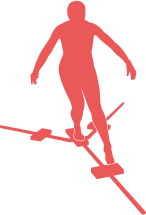
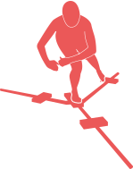
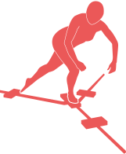
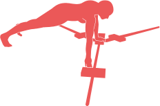

<!--
  Generated template for the ScreeningYbtPage page.

  See http://ionicframework.com/docs/components/#navigation for more info on
  Ionic pages and navigation.
-->
<ion-header>

  <ion-navbar color="dark">
    <ion-title>Screening YBT</ion-title>
  </ion-navbar>

</ion-header>


<ion-content >

  <ion-grid text-center class="screening">

    <ion-row>
      <ion-col col-4 (tap)="openLowerqModal({characterNumLowerq: 0})">
        
        <p><small>Anterior Reach</small></p>

      </ion-col>

      <ion-col col-4 (tap)="openLowerqModal({characterNumLowerq: 1})">
        
        <p><small>Posterormedial Reach</small></p>

      </ion-col>

      <ion-col col-4 (tap)="openLowerqModal({characterNumLowerq: 2})">
        
        <p><small>Posterorlateral Reach</small></p>

      </ion-col>


    </ion-row>

    <ion-row>

      <ion-col col-6 (tap)="openUpperqModal({characterNumUpperq: 0})">
        
        <p><small>Left Upper Quarter</small></p>

      </ion-col>


      <ion-col col-6 (tap)="openUpperqModal({characterNumUpperq: 1})">
        
        <p><small>Right Upper Quarter</small></p>

      </ion-col>


    </ion-row>


  </ion-grid>


  <button ion-button full block color="secondary" (click)="doConfirm()">Complete Screen</button>

</ion-content>
